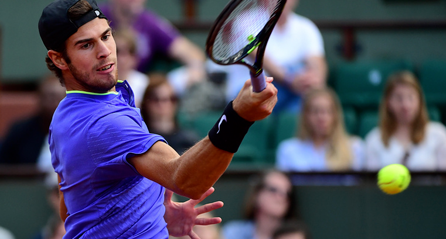

Хачанов проиграл первой ракетке мира Маррею и выбыл из Roland Garros
17 мая 2017МОСКВА, 5 июня. /ТАСС/. Россиянин Карен Хачанов проиграл первой "ракетке" мира британцу Энди Маррею в матче 1/8 финала Roland Garros (призовой фонд - более €36 млн), второго в сезоне турнира серии Большого шлема.
Встреча завершилась со счетом 6:3, 6:4, 6:4 в пользу британского теннисиста.
Россиянин, занимающий 53-ю строчку в рейтинге Ассоциации теннисистов-профессионалов, впервые в своей карьере дошел до 1/8 финала на турнирах серии Большого шлема. Хачанов последним из россиян выбыл из одиночного турнира Roland Garros.
В следующем раунде Маррей встретится с победителем матча между японцем Кеи Нисикори (8) и испанцем Фернандо Вердаско.
Открытый чемпионат Франции завершится 11 июня.
Похожие новости
категории
популярные новости
«Фиорентина» отдала € 8 млн за игрока «Палмейраса» Уго
17 мая 2017«Фиорентина» официально объявила о переходе защитника «Палмейраса» Витора Уго. По информации итальянских СМИ, сумма трансфера составила € 8 млн. Контракт между «фиалками» и Уго рассчитан на четыре года.
Далее«Фиорентина» отдала € 8 млн за игрока «Палмейраса» Уго
17 мая 2017«Фиорентина» официально объявила о переходе защитника «Палмейраса» Витора Уго. По информации итальянских СМИ, сумма трансфера составила € 8 млн. Контракт между «фиалками» и Уго рассчитан на четыре года.
Далее